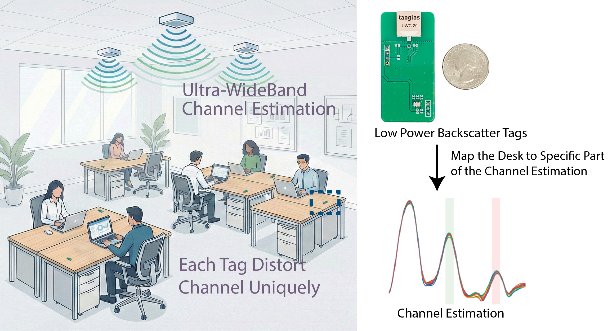

DeskSense: Desk Occupancy Sensing with Commercial UWB Devices and Low Power Backscatter Tags

Hot-desk offices need desk-level occupancy sensing for applications such as wake-on-use networking and space analytics, but existing approaches do not scale across layouts. Camera-based systems raise privacy concerns, while device-free RF methods (Wi-Fi, UWB, or radar) learn from full-channel fingerprints that must be recollected whenever desks or access points move. We present DeskSense, a UWB sensing system that makes desk occupancy geometry-aware by attaching an ultra-low-power backscatter tag to each desk and localizing these tags with commercial UWB radios on next-generation Wi-Fi access points. By mapping each tag to specific regions of the channel impulse response (CIR), DeskSense tells the model which part of the CIR belongs to which desk. This avoids per-layout fingerprinting: when the room layout or AP placement changes, DeskSense only re-localizes the tags instead of re-collecting labeled occupancy data. To make this practical, DeskSense introduces (i) a signal-processing pipeline that compensates hardware imperfections in COTS UWB radios through FFT upsampling, two-stage amplitude alignment, and LoS-based phase correction for reliable CIR estimates, (ii) a batteryless backscatter tag (56 mm × 27 mm) that embeds Kasami pseudo-noise codes for high processing gain and CDMA-like multi-desk scaling, and (iii) a 2D ResNet model with physics-aware data augmentations that learns generalizable occupancy features from range-gated CIR segments. We evaluate DeskSense on a 5-desk testbed across two rooms with different layouts. It localizes desks within 10 cm and achieves 79.17% occupancy accuracy on unseen layouts (versus 66.67% for full-range baseline), without manual calibration or per-layout fingerprinting.
Ultra-wideband (UWB) is a radio technology that transmits short pulses across a wide frequency spectrum (e.g., 500 MHz bandwidth at 7.9 GHz), enabling precise temporal resolution of signal arrivals. Unlike narrowband Wi-Fi systems that struggle to distinguish nearby desks, UWB's wide bandwidth provides fine spatial resolution—capable of separating multipath components just centimeters apart. This makes UWB particularly suitable for desk-level occupancy sensing: by isolating the specific multipath reflections from each desk in the channel impulse response, the system can monitor individual desks independently of the broader room geometry. UWB radios are increasingly integrated into next-generation wireless access points (e.g., Cisco), positioning them as a scalable infrastructure for workspace sensing.
The Channel Impulse Response (CIR) characterizes how a transmitted signal propagates through space, capturing all multipath components (e.g., direct line-of-sight, reflections from walls, furniture, and people) as a function of time (or equivalently, distance). Each peak in the CIR corresponds to a signal path at a specific range. In DeskSense, the CIR reveals which parts of the environment reflect UWB signals; by mapping specific CIR regions to individual desks, the system can focus occupancy detection on relevant signal components rather than learning entire-room fingerprints.
Backscatter communication [1,2] allows a device to transmit information by modulating the reflection of an incident radio signal, rather than generating its own transmission. A backscatter tag uses a simple RF switch to toggle between reflective states (e.g., short vs. open circuit), creating a 180° phase shift in the reflected signal. This requires minimal power (no active radio transmitter), making it ideal for batteryless, maintenance-free deployment. In DeskSense, each tag modulates its reflection with a unique pseudo-noise code, enabling the system to identify and localize individual desks.
Pseudo-Noise (PN) sequences, such as Kasami codes, are deterministic binary patterns with strong auto-correlation (easy to detect) and weak cross-correlation (minimal interference between codes). By embedding different PN codes in each tag's backscatter reflection, DeskSense can distinguish multiple tags simultaneously and locate each desk by correlating the CIR with known code patterns. This provides both processing gain to detect weak reflections and scalability to monitor many desks in parallel.
To estimate occupancy states, one approach is to have occupants carry or wear mobile tags or devices [3]. However, this method can be inconvenient for occupants and may lead to inaccurate results if the device is misplaced [4]. A similar approach is to install sensors on desks, such as pressure sensors or infrared sensors, to directly monitor occupancy [5]. While these methods can provide accurate occupancy detection, they require significant infrastructure changes and maintenance, making them less practical for large-scale deployments in dynamic office environments.
A device-free approach does not require occupants to carry any devices, instead leveraging environmental sensing technologies such as cameras, Wi-Fi, UWB, or radar to infer occupancy based on changes in the environment. Camera-based systems can provide high accuracy but raise privacy concerns and may be affected by lighting conditions [6]. Wi-Fi-based sensing methods utilize existing Wi-Fi infrastructure to monitor signal variations caused by human presence, but they often struggle with limited spatial resolution and provide limited generalizability [3, 7, 8, 9].
Ultra-wideband (UWB) radio has been widely adopted for human detection and occupancy sensing due to its high temporal resolution, obstacle penetration capability, and privacy-preserving nature compared to camera-based systems. Early work by Kim et al. [10] developed robust detection methods for determining the presence of individuals in indoor environments using IR-UWB radar, addressing challenges such as heavy clutter and multipath effects through systematic clutter reduction techniques including SVD-based approaches and two-stage detection schemes. Their work demonstrated that combining range-domain and frequency-domain detection (for respiratory movement) could successfully identify both standing and lying individuals even in challenging environments.
More recently, Blangiardi et al. [11] explored AI-based people counting in public transport vehicles using multiple IR-UWB transceivers, showing that data fusion from multiple sensors combined with machine learning models could achieve up to 100% accuracy when trained on exhaustive datasets. Their work highlighted the importance of training data diversity and demonstrated that models could generalize to unseen static configurations with up to 91.5% accuracy in simpler scenarios. However, both approaches rely on full-channel fingerprints that require extensive data collection for each new environment or layout configuration.
While these UWB sensing systems demonstrate strong performance, they share a fundamental limitation: they learn from entire Channel Impulse Response (CIR) patterns that are highly specific to a particular room geometry and furniture arrangement. Kim et al.'s [10] SVD-based clutter reduction assumes stationary background clutter captured in initial calibration measurements, while Blangiardi et al. [11] found that models trained on one positional configuration of people performed significantly worse (accuracy dropping from 91.5% to as low as 34.1%) when tested on different layouts. This fingerprinting dependency means that whenever desks, access points, or room layouts change, these systems require complete recalibration and retraining—a costly and unscalable process for dynamic workspace environments.
The first challenge is obtaining reliable CIR estimates from commercial UWB radios despite hardware imperfections. COTS UWB systems use bi-static configurations, where transmitter and receiver are separate devices with independent oscillators. This introduces frame misalignment and carrier frequency offset (CFO), causing significant variations in both amplitude and phase of the CIR across frames. Without correction, these imperfections introduce noise that degrades both tag localization and occupancy detection. We address this through a signal processing pipeline that calibrates CIR estimates for consistent, high-fidelity measurements.

CIR Upsampling: COTS UWB radios (e.g., Qorvo DW3000 [12]) provide CIR estimates with ~1 ns sampling intervals, corresponding to ~30 cm spatial resolution. Desk-level sensing requires finer resolution to distinguish nearby reflections, so we apply FFT-based upsampling through zero-padding in the frequency domain, increasing the temporal resolution for precise multipath separation.
Amplitude Normalization & Two-Stage Frame Alignment: UWB radios construct CIR estimates by accumulating preamble symbols, so we first normalize amplitudes based on the reported accumulation count to ensure consistency across frames. For alignment, prior works rely on the first-path index reported by the radio's leading-edge detection algorithm, but this proves unreliable in practice. Instead, we exploit the fact that access points are typically ceiling- or wall-mounted, ensuring a stable line-of-sight (LoS) path between transmitter and receiver. We perform cross-correlation on the LoS region to align each frame to a reference, similar to previous work [13], but we find that raw amplitude correlation can fail to align frames when peaks merge or amplitudes vary. To improve robustness, we apply a second-stage alignment by correlating the second derivative of the amplitude profile, which is more sensitive to peak structure and successfully handles merged peaks [14].

Phase Alignment (CFO Compensation): CFO arises from oscillator mismatch between transmitter and receiver, causing phase rotation that accumulates across all multipath components. Since the LoS path phase should remain constant in our bi-static setup with fixed AP locations, we use a "follow the leader" approach: estimate the phase rotation of the LoS path relative to a reference frame, then compensate for this rotation across the entire CIR. This single correction removes CFO-induced phase distortion from all components simultaneously.
Static Clutter Removal: Finally, we remove static reflections from walls and furniture by subtracting a temporal average CIR, highlighting the dynamic changes caused by human presence while suppressing unchanging environmental clutter.
Once the CIR estimates are calibrated, the next challenge is achieving desk-level occupancy sensing that generalizes across room layouts without extensive per-layout fingerprinting. When desks or access points move in a new office configuration, the full CIR changes dramatically, invalidating previously collected training data. Traditional device-free sensing approaches must then re-collect labeled occupancy samples for each new layout, which is a costly and unscalable process.
DeskSense solves this by making occupancy detection geometry-aware: instead of learning from the entire CIR, we focus only on the CIR components corresponding to each desk. We attach an ultra-low-power backscatter tag to each desk that reflects UWB signals modulated with a unique pseudo-noise (PN) sequence. By localizing these tags, we map each desk to specific ranges in the CIR. When the layout changes, DeskSense only re-localizes the tags (a quick, automated process) instead of re-collecting labeled occupancy data.
Backscatter tags are essential for three reasons: (1) they operate without batteries, making them maintenance-free for long-term deployment, (2) the PN sequence provides processing gain that enables reliable detection despite UWB's strict power limits, and (3) using orthogonal PN codes (Kasami sequences) enables CDMA-like multi-tag operation, allowing many desks to be localized simultaneously without interference.

Block diagram for the tag

Fabricated tag
Each tag (56 mm x 27 mm) consists of a UWB antenna, an SP2T RF switch, a real-time clock (RTC) module, and a microcontroller (MCU). The MCU stores a unique Kasami PN sequence and generates a control signal that drives the RF switch to toggle between short and open circuit states at the clock rate. These two states re-radiate the incoming UWB signal with a 180° phase difference, embedding the PN code in the backscattered reflection. When a UWB AP transmits, the tag modulates its reflection with this code, creating a distinct pattern in the received CIR. By correlating specific CIR time bins with known PN sequences, DeskSense identifies which part of the CIR corresponds to which tag, and therefore which desk. This enables automatic desk-to-CIR mapping at scale.

After localizing tags and mapping them to specific CIR ranges, DeskSense performs range-gating: extracting only the CIR segments corresponding to each desk and feeding them to a convolutional neural network. This geometry-aware approach focuses the model on desk-relevant reflections while filtering out unrelated environmental clutter, enabling generalization across different room and desk layouts without retraining.
Following a similar design in [15], our occupancy detection pipeline begins with a 2D ResNet block that extracts features across both spatial (CIR time bins) and temporal (consecutive frames) dimensions, capturing how reflections evolve as people move and occupy desks. An average pooling layer then aggregates spatial features, followed by a 1D ResNet block that further refines temporal patterns. Finally, a pooling layer and fully connected layer output the binary occupancy status for each desk. To improve robustness against "ghost occupancy" caused by multipath reflections from people in adjacent areas, DeskSense uses multiple receiver nodes to increase observation diversity and reduce false positives.
To enhance generalization, we apply physics-aware data augmentations that simulate realistic CIR variations: (1) Gaussian noise to model measurement uncertainty, (2) random range center shifts to account for small localization errors during range-gating, and (3) time warping to simulate varying speeds of human movement. These augmentations encourage the model to learn robust features that remain invariant to environmental perturbations, improving cross-layout performance without requiring extensive real-world data collection.
We evaluate DeskSense on two key questions:
We deploy DeskSense in a common office environment with five desks, each equipped with a backscatter tag encoded with a unique 12-bit Kasami code (length 4095). Qorvo DWM3001CDK [12] UWB nodes serve as access points at fixed locations (Channel 9, 7.9 GHz center frequency, 500 MHz bandwidth). We heavily modified the firmware to extract raw CIR estimates at 1024 Hz, with each PN symbol lasting 2 CIR frames (512 Hz symbol rate). For tag localization, one node transmits while all other nodes receive and record CIR estimates.

Tag Deployment Setup
Correlation Results
The correlation results clearly reveal distinct peaks for all five tags, enabling simultaneous excess path length estimation for each desk. Multiple peaks appear for each tag due to multipath reflections from walls and furniture. To extract the direct path, we apply a derivative-based peak selection algorithm: (1) normalize correlation power across CIR time bins to account for varying signal strengths at different tag distances, (2) compute the derivative of the normalized correlation to accurately identify peak locations, and (3) select the earliest peak exceeding a normalized amplitude threshold of 0.3 as the direct path measurement.
DeskSense achieves localization errors below 10 cm across all five tags simultaneously. This precision is sufficient for reliable desk-to-CIR mapping, and the use of orthogonal Kasami codes enables interference-free multi-tag operation, demonstrating scalability to many-desk deployments.

UWB Node Deployment Setup Illustration
Desk Layouts
To evaluate cross-layout generalization, we setup the system to have four UWB nodes positioned at the corners of the room (inter-node distances ranging from 4.64 m to 7.38 m) to increase observation diversity and mitigate multipath-induced false positives. We test two desk configurations: Layout 1 arranges a two-seat desk horizontally, while Layout 2 arranges it vertically, creating substantially different multipath environments.
For each layout, we collect 3 minutes of data per condition: Desk 1 occupied, Desk 2 occupied, and both desks empty (with people walking or standing nearby to simulate realistic clutter). The four nodes operate in Time Division Multiple Access (TDMA) mode at 400 Hz total system rate, yielding 100 Hz effective sampling per node. This multi-node, multi-layout dataset captures diverse spatial perspectives and human activity patterns.
We train the occupancy model on Layout 1 and test on the unseen Layout 2 to evaluate generalization capability. DeskSense (with range-gating) is compared against a baseline that uses the full CIR without geometry-aware filtering. Both models are trained using the Adam optimizer for 100 epochs (learning rate 0.001, batch size 32).
Results: DeskSense achieves 79.17% test accuracy on the unseen layout, significantly outperforming the full-CIR baseline at 66.67%. Notably, the baseline overfits to Layout 1 (97.66% training accuracy vs. DeskSense's 86.11%), while DeskSense's range-gating and physics-aware augmentations prevent overfitting and enable better generalization. This demonstrates that focusing on desk-specific CIR segments rather than entire-room fingerprints is helpful for cross-layout robustness without per-layout retraining.
The backscatter tag's key components, costs, and power consumption are summarized in Table 1. At bulk pricing (1,000 units), component cost totals approximately $3.99 per tag. PCB fabrication uses standard FR-4 substrate, adding minimal cost for this simple, compact design (56 mm x 27 mm). The RF switch dominates power consumption at 49.5 μW quiescent power, while the RTC and MCU contribute negligibly. With sub-50 μW operation, tags can be powered by small coin-cell batteries (years of maintenance-free operation) or energy harvesting (e.g., indoor solar panels), making them practical for long-term office deployments.
| Part | Cost [$] | Quiescent Power | |||
|---|---|---|---|---|---|
| @1 | @1000 | Current [μA] | Volt. [V] | Power [μW] | |
| Taoglas UWC.20 Antenna [16] | 3.89 | 1.94 | Passive (no quiescent power) | ||
| SKY59608-711LF Switch [17] | 0.68 | 0.32 | 15.00 | 3.3 | 49.50 |
| RTC RV-3032-C7 Clock [18] | 3.18 | 1.73 | 0.16 | 3.0 | 0.48 |
Limited Dataset Diversity: Our current dataset is limited in size and scenarios, restricting the model's performance on edge cases such as people standing near desks without sitting or moving dynamically in close proximity. Collecting large-scale labeled occupancy data in real offices is time-intensive and logistically challenging, particularly for capturing diverse human behaviors and environmental conditions.
Low-Height AP Placement: The current prototype uses tripod stands (1.6-1.8 m height) to mount UWB nodes, making them vulnerable to line-of-sight blockage when people walk between APs. This affects both the amplitude alignment pipeline (which relies on stable LoS) and overall sensing quality. In real deployments, APs would be ceiling- or high-wall-mounted (2.5-3 m+), significantly reducing LoS occlusion and improving robustness.
Several directions can extend DeskSense's capabilities and practicality: